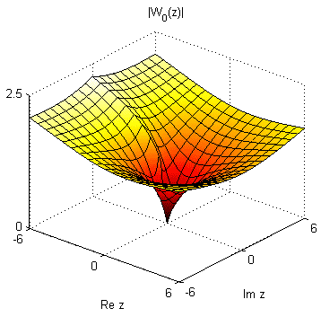
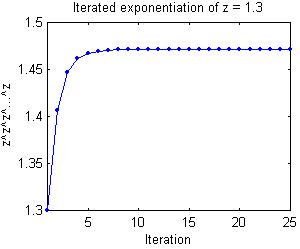

Lambert W Function Implementation
Pascal Getreuer
The Matlab function lambertw included in this package is a self-contained M-function implementing the Lambert W function, also known as the Ω function or “product log.” It is equivalent to the numerical mode of the Symbolic Math Toolbox’s lambertw, however, no toolboxes are required to use this function.
License (BSD)
Copyright © 2006, Pascal Getreuer
All rights reserved.
Redistribution and use in source and binary forms, with or without modification, are permitted provided that the following conditions are met:
- Redistributions of source code must retain the above copyright notice, this list of conditions and the following disclaimer.
- Redistributions in binary form must reproduce the above copyright notice, this list of conditions and the following disclaimer in the documentation and/or other materials provided with the distribution.
THIS SOFTWARE IS PROVIDED BY THE COPYRIGHT HOLDERS AND CONTRIBUTORS “AS IS” AND ANY EXPRESS OR IMPLIED WARRANTIES, INCLUDING, BUT NOT LIMITED TO, THE IMPLIED WARRANTIES OF MERCHANTABILITY AND FITNESS FOR A PARTICULAR PURPOSE ARE DISCLAIMED. IN NO EVENT SHALL THE COPYRIGHT OWNER OR CONTRIBUTORS BE LIABLE FOR ANY DIRECT, INDIRECT, INCIDENTAL, SPECIAL, EXEMPLARY, OR CONSEQUENTIAL DAMAGES (INCLUDING, BUT NOT LIMITED TO, PROCUREMENT OF SUBSTITUTE GOODS OR SERVICES; LOSS OF USE, DATA, OR PROFITS; OR BUSINESS INTERRUPTION) HOWEVER CAUSED AND ON ANY THEORY OF LIABILITY, WHETHER IN CONTRACT, STRICT LIABILITY, OR TORT (INCLUDING NEGLIGENCE OR OTHERWISE) ARISING IN ANY WAY OUT OF THE USE OF THIS SOFTWARE, EVEN IF ADVISED OF THE POSSIBILITY OF SUCH DAMAGE.
Function Use
w = lambertw(z) computes the principal value of the Lambert W function, \(W_0\). The input z may be a complex scalar or array. For real z, the result is real on the principal branch for z ≥ −1/e.
w = lambertw(b,z) specifies which branch of the Lambert W function to compute. If z is an array, b may be either an integer array of the same size as z or an integer scalar. If z is a scalar, b may be an array of any size.
Background
The Lambert W function is defined as the function W(z) such that
\[ W(z) \mathrm{e}^{W(z)} = z \]
for all complex values z. As log z is the inverse of ez, W(z) is the inverse of z ez. Like the complex logarithm, the Lambert W function is multivalued with a countably infinite number of branches. The branches are enumerated by the integers and are conventionally denoted by \(W_k\) for the kth branch.
The principal branch, \(W_0(z)\), is real-valued for −1/e ≤ z. If −1/e ≤ z < 0, then the branch \(W_{-1}(z)\) is also real-valued. In the complex plane, a surface plot of \(|W_0(z)|\) is

Algebra with the Lambert W Function
Although the Lambert W function may not be so widely known as the inverse trigonometry functions, it has essentially the same purpose as acos, asin, etc. as a building-block tool for solving equations. Generally, the goal is to manipulate all occurrences of the unknown variable x into an expression of the form \(f(x) \mathrm{e}^{f(x)}\), and then apply the Lambert W function.
Problem 1. Solve \(y = (x − 1) \mathrm{e}^{2x}\) for x.
Solution: The right-hand side is close to the necessary form \(f(x)\mathrm{e}^{f(x)}\), but some manipulation is necessary to change the factor \((x - 1)\) and the exponent 2x into the same expression. Multiplying both sides by 2,
\[2y = (2x - 2) \mathrm{e}^{2x}.\]
This form is closer, the exponent is only missing the −2. Multiplying both sides by e−2 gets the desired form,
\[2\mathrm{e}^{-2}y = (2x - 2) \mathrm{e}^{2x-2}.\]
Now we can apply the Lambert W function to get
\[W(2\mathrm{e}^{-2}y) = 2x - 2,\]
which rearranges to the solution \(x = W(2\mathrm{e}^{-2} y)/2 + 1\). Note that since W is multivalued, the solution is multivalued; there are multiple values of x satisfying the equation.
Problem 2. Solve \(b^x = x^\alpha\) for x.
Solution: There is initially no visible instance of the exponential function, but rewrite \(b^x\) as \(\mathrm{e}^{x \log b}\) to reveal \[\begin{align} \mathrm{e}^{x\log b} &= x^\alpha \\ \mathrm{e}^{x(\log b) / \alpha} &= x. \end{align}\]
Now divide the exponential over to the right-hand side and multiply by \(-(\log b)/\alpha\):
\[\begin{align} 1 &= x \mathrm{e}^{-x (\log b)/\alpha} \\ -(\log b)/\alpha &= (-x (\log b)/\alpha) \mathrm{e}^{-x (\log b)/\alpha}. \end{align}\]
The right-hand side is now in the form \(f(x)\mathrm{e}^{f(x)}\) where the Lambert W function can be applied:
\[W\bigl(-(\log b)/\alpha\bigr) = -x (\log b)/\alpha. \]
The solution is \(x = -(\alpha / \log b) W\bigl(-(\log b)/\alpha\bigr)\).
Problem 3. An old result [1] is the closed-form expression for iterated exponentiation:
\[z^{z^{z^\cdots}} = \frac{W(-\log z)}{-\log z}.\]
Find z such that \(z^{z^{z^\cdots}} = 2\).
Solution: Using the formula, \[\begin{align} -W(-\log z) / \log z &= 2 \\ W(-\log z) &= -2\log z \\ -\log z &= -2\log z \mathrm{e}^{-2\log z} \\ \mathrm{e}^{2\log z} &= 2 \\ z &= \sqrt{2}. \end{align}\]
Demos
The following command evaluates \(W_k(1)\) for \(k = -4,\ldots,4\):
w = lambertw((-4:4).',1)
w =
-3.1630 -23.4277i
-2.8536 -17.1135i
-2.4016 -10.7763i
-1.5339 - 4.3752i
0.5671
-1.5339 + 4.3752i
-2.4016 +10.7763i
-2.8536 +17.1135i
-3.1630 +23.4277iThese values are all solutions of \(w\mathrm{e}^w = 1\). It is easy to verify numerically that they are solutions:
w.*exp(w)
ans =
1.0000 - 0.0000i
1.0000 - 0.0000i
1.0000 + 0.0000i
1.0000
1.0000
1.0000
1.0000 - 0.0000i
1.0000 + 0.0000i
1.0000 + 0.0000iProblem 3 in the previous section mentioned the formula for evaluating iterated exponentiation: \[z^{z^{z^\cdots}} = \frac{W(-\log z)}{-\log z}.\]
For example, set z = 1.3, then its iterated exponentiation is approximately zlim = 1.4710.
To verify this, computing z^z^z^...^z through 40 iterations shows that the iterated exponentiation does indeed converge to zlim.

k zz zlim-zz
1 1.4065 0.065
2 1.4463 0.025
3 1.4615 0.0095
4 1.4673 0.0037
5 1.4696 0.0014
6 1.4704 0.00055
7 1.4708 0.00021
8 1.4709 8.1e-005
9 1.4710 3.1e-005
10 1.4710 1.2e-005
20 1.4710 8.9e-010
30 1.4710 6.5e-014
40 1.4710 2.2e-016Test
Ideally, lambertw(b,z)*exp(lambertw(b,z)) = z for any complex z and any integer branch index b, but this is limited by machine precision. The inversion error |lambertw(b,z)*exp(lambertw(b,z)) - z| is small but worth minding.
Experimentation finds that the error is usually on the order of |z|×10−16 on the principal branch. This test computes the inversion error over the square [−10,10]×[−10,10] in the complex plane, large enough to characterize the error away from the branch points at z = 0 and −1/e.
N = 81; % Use NxN points to sample the complex plane
R = 10; % Sample in the square [-R,R]x[-R,R]
x = linspace(-R,R,N);
y = linspace(-R,R,N);
[xx,yy] = meshgrid(x,y);
z = xx + 1i*yy;
for b = -4:4
w = lambertw(b,z);
InvError = abs(w.*exp(w) - z);
fprintf('Largest error for b = %2d: %.2e\n',b,max(InvError(:)));
endLargest error for b = -4: 2.51e-014
Largest error for b = -3: 2.39e-014
Largest error for b = -2: 1.39e-014
Largest error for b = -1: 7.94e-015
Largest error for b = 0: 5.40e-015
Largest error for b = 1: 7.94e-015
Largest error for b = 2: 1.39e-014
Largest error for b = 3: 2.39e-014
Largest error for b = 4: 2.51e-014Implementation
The Lambert W function is implemented numerically with approximations from series expansions followed by root-finding. Depending on the desired branch and the proximity to the branch points at z = 0 and −1/e, different series expansions are used as initializations to the root-finder.
As developed in [2], lambertw uses Halley’s method, a fourth-order extension of Newton’s root-finding method. Convergence is very fast, usually requiring fewer than 5 iterations to reach machine accuracy.
References
[1] G. Eisenstein, “Entwicklung von αα….” J. reine angewandte Math., vol. 28, 1844.
[2] R.M. Corless, G.H. Gonnet, D.E.G. Hare, G.J. Jeffery, and D.E. Knuth. “On the Lambert W Function.” Advances in Computational Mathematics, vol. 5, 1996.